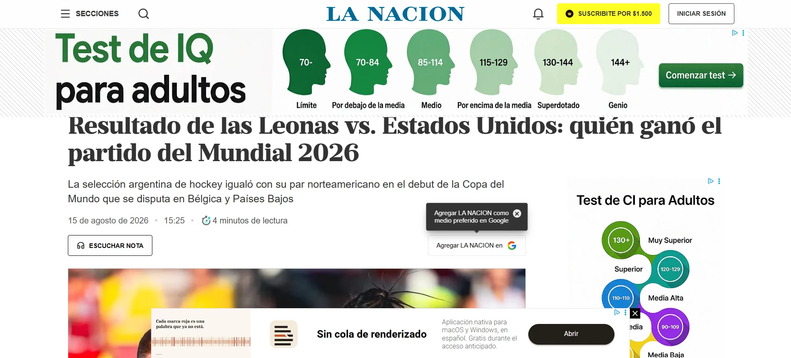
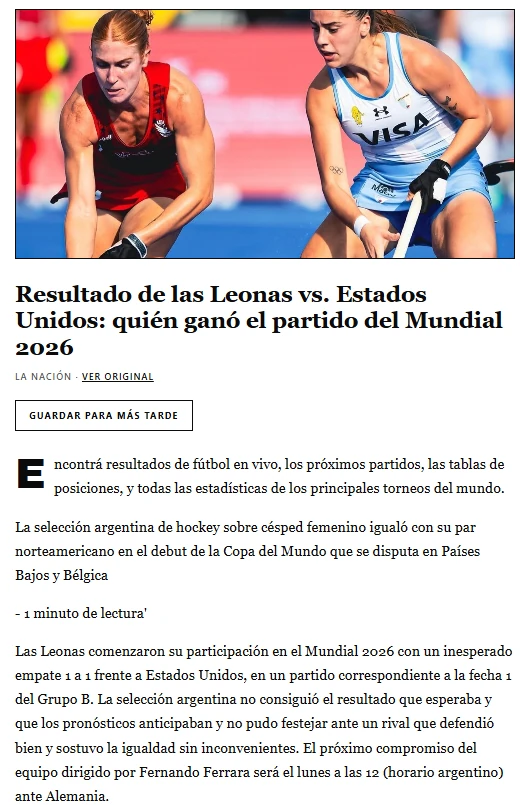
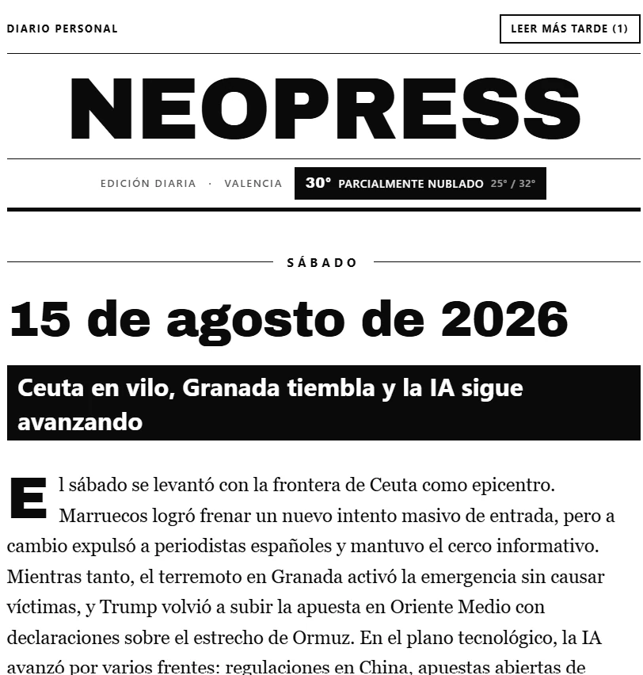
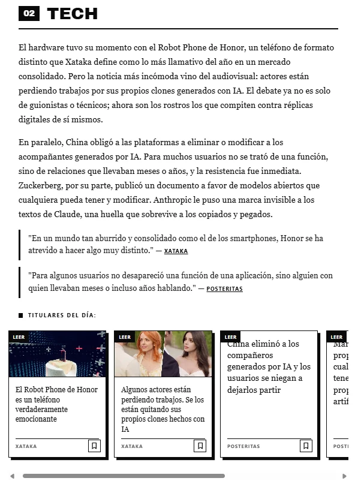

El porqué: vivía en una burbuja
No tengo Instagram, ni TikTok, ni Twitter. La única red social que tengo es Reddit, y entro de vez en cuando. El resultado era predecible: no me enteraba de nada. Mis amigos y conocidos me decían «¿viste lo que pasó ayer con tal cosa?» y mi respuesta era siempre la misma.
Ni idea. Vivía como en una burbuja.
De ahí salió Neopress: una forma limpia de estar informado, con una dosis de actualidad finita, y una experiencia de lectura que no te tira un popup cada cinco segundos.
El problema: que la información no te consuma
La decisión no era si estar informado, sino a qué costo. La forma habitual de resolverlo —volver a las redes, aceptar el feed infinito— es la que ya había rechazado. Así que el problema de diseño era otro: ¿se puede estar al día sin que la actualidad te coma?
Eso ordenó todo lo demás. Un lector de fuentes personalizable, un agente que hace de conector entre el material crudo y una edición legible, y una estructura fija pero moldeable: el sistema se adapta a cómo quiero leer, no al revés.
Es el mismo problema que Kio ataca desde el lado social, pero acá desde el lado personal. Kio es la respuesta para otros. Neopress es la respuesta para mí.
La postura editorial: un formato, no un feed
Un diario tiene una forma. Eso es una decisión de producto, no de estética: la forma es lo que hace que haya un final.
Cada edición tiene encabezado, panorama, secciones fijas y numeradas —Mundo, Tecnología, Social, Local, Chapuzón, Variado—, un resumen con citas enlazables, un carrusel de titulares y una lectura limpia. Se puede recorrer en cinco minutos, y se termina. Esa finitud es el producto.
Es lo contrario de un feed: no hay nada que hacer después de leer, no hay una siguiente página esperándote, no hay un algoritmo decidiendo cuánto te quedás. Cuando el diario se acaba, se acabó.


La piel: un periódico en blanco y negro
La segunda versión de la interfaz se diseñó como un neoperiódico: masthead tipográfico pesado, tapa con la fecha en display y el titular invertido, capitular en el panorama, secciones con cuadrado negro, tarjetas con borde duro y sombra sólida, y las fotos en escala de grises.
Todo en blanco y negro, y sin una sola animación. No es una preferencia estética: la piel está diseñada para leerse en papel electrónico, donde cada transición cuesta refresco de pantalla y cualquier movimiento es un problema. Diseñar para ese medio obliga a que la jerarquía la sostenga la tipografía y no el efecto — que es, sospecho, un buen ejercicio para cualquier producto.

La portada — masthead, fecha y titular invertido

Una sección — numerada, con cita y titulares del día
El pipeline: el diario se escribe solo
Cada mañana, sin que yo toque nada: se recolectan las fuentes, se suma el clima, y un agente hace de editor —toma el material crudo y lo convierte en una edición con voz, con su panorama y sus secciones— y la publica a las nueve.
Cuando el lector despierta, el diario ya existe. Ese es el punto: si tuviera que producirlo yo, tendría el problema que Neopress vino a resolver.
Las superficies
El mismo diario se lee en el teléfono, en la computadora y en el papel electrónico — que es donde mejor queda, porque la interfaz se diseñó pensando en él. Es una aplicación web instalable, sin tiendas de aplicaciones de por medio.
Y es privado: no hay nada publicado en internet abierto. Se accede por un túnel propio, así que el diario es mío de verdad — no un feed que alguien más puede leer, rastrear o vender.
Lo que se rompió
El MVP recortó y aun así hubo sorpresas. Dos fuentes devolvían cero elementos de forma consistente y hubo que revisarlas una por una. Otra plataforma limitaba la recolección a una sola comunidad por corrida, y devolvía error si se pedía más. Y la generación fallaba en silencio cuando faltaba un paso intermedio de extracción: el diario salía sin lectura limpia y sin imágenes, y el error no aparecía hasta abrir la edición.
Nada de eso era un problema de diseño. Pero todo eso es lo que hay que resolver para que el diseño llegue a existir.
Qué aprendí
Que la información vale mucho, y que tener un sistema para que seas vos quien consume la información —y no la información la que te consume— es valor real.
Es lo que me llevo de este proyecto: no es una aplicación de noticias. Es una forma de recuperar algo que había perdido sin darme cuenta.